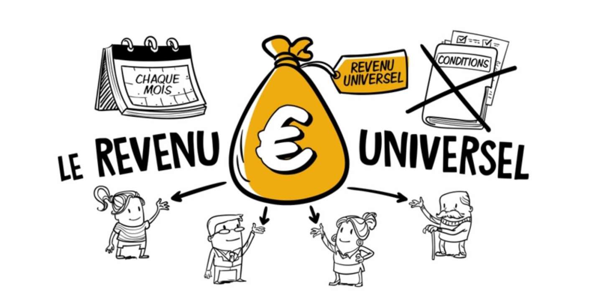

Le Revenu Universel (également dénommé Allocation Universelle ou Revenu de Base), consiste en une somme fixe versée périodiquement et individuellement à tous les citoyens par l’État ou autre institution politique, quelles que soient par ailleurs les ressources du bénéficiaire, sans aucune condition ni contrepartie.
Plus précisément, le concept de revenu universel recouvre deux approches différentes. La première est le versement garanti par l’État d’une aide à toute personne dont les revenus sont inférieurs à un certain seuil. La seconde est celle du revenu universel de base, également appelé revenu d’existence, versé par les pouvoirs publics à chaque citoyen, quelle que soit sa situation professionnelle, sans condition de ressource et sans contrepartie telle que la recherche d’un emploi.
 Source : Dessine-moi l'écoLes Conditions d'accès
Il existe de nombreux dispositifs de protection sociale qui peuvent être considérés comme liés au revenu universel. De nombreux pays et régions possèdent ou testent des systèmes de revenus s'apparentant à un revenu universel. Parmi eux, on peut citer le Fonds permanent de l'Alaska (The Permanent Fund of Alaska) qui est essentiellement un revenu de base partiel et qui s'élève en moyenne à 1 600 dollars par an par résident (en monnaie de 2019). On retrouve aussi l’Allemagne qui mène une expérimentation autour du revenu universel depuis février 2021, mois à partir du quel 120 citoyens allemands ont commencé à recevoir un revenu de base de 1200 euros mensuel pour les trois années qui suivent. L'expérience a très vite suscité l'engouement de la population puisque plus de 1,6 million de personnes majeures s'étaient portées volontaires pour y participe. À l'initiative du projet, l'institut allemand de recherche économique DIW évaluera au fil des mois l'impact social et les conséquences de la mesure sur le marché du travail, ou encore sur le marché de l'immobilier.
Quant à la France, l’idée du revenu universel fut portée par Benoît Hamon lors des élections de 2017. Généralement, les conditions d’accès au RU dépendent du Pays mais si Benoît Hamon avait été élu, ce dernier prévoyait de mettre en place – au 1er janvier 2018, au moment où entre en vigueur le prélèvement de l’impôt à la source – un revenu universel d’existence (RUE) pour tous les adultes entre 18 ans et l’âge de la retraite. Pour y prétendre, les jeunes majeurs devront prendre leur indépendance fiscale et ne plus être rattachés à la feuille d’impôt de leurs parents.
Le RUE concernerait l’ensemble des personnes sans ressources ou dont les revenus sont inférieurs à 1,9 fois le salaire minimum (smic) mensuel, soit 2 812 euros brut, ou 2 185 euros net. Selon l’Insee, les deux tiers des salariés à équivalent temps plein gagnaient moins que cette somme en 2013. Les couples bénéficieraient du RUE si le total de leurs revenus est inférieur à 3,9 smic.